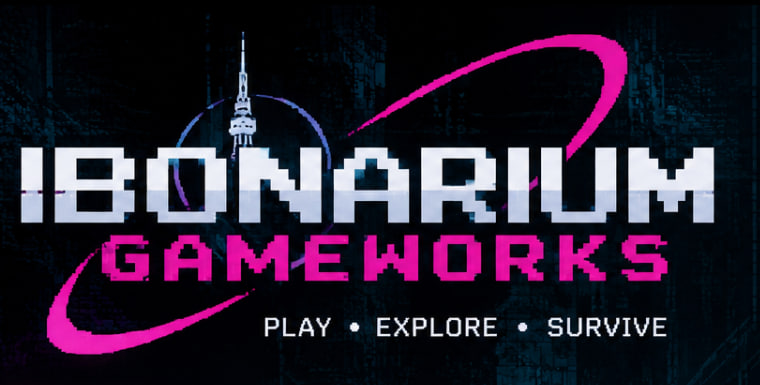

ПРО ГРУ ТА АСЕТИ
НОВЕ У v18.4 «МІСТО БЕЗ БАГАТОВЕРХІВОК»: (1) НУЛЬ БАГАТОВЕРХІВОК НА КАРТІ — гравець: «ці будівлі прибрати зовсім з карти, перероби без цих будувель». Сірі панельки-«млинці» і цегляні вежі (той самий силует «плити» 9–12 поверхів) ВИДАЛЕНІ ЗОВСІМ: ручні вежі більше не генеруються, квартали веж → житлові ряди дач і котеджна сітка з дворами, крамницями, кіосками і гаражами. (2) ЖИТЛО НЕ ПОСТРАЖДАЛО: 10 квартир-контейнерів і «ПІВНІЧНИЙ»/«ПІВНІЧНИЙ-2» тепер — НИЗЬКІ 2-ПОВЕРХОВІ цегляні житлові будинки (білі рами, карниз, парапет, сині козирки, під'їзди, мешканці на балконах вранці/ввечері, 4 палітри цегли). (3) ТЕКСТИ: двері «Житловий будинок», оренда «ЖИТЛОВИЙ БУДИНОК — КВАРТИРА», ріелтор «БРОНКС — преміум, далі — нові житлові будинки», квест «ЖИТЛО — ДІМ» (фото нових будинків). (4) АНКОРИ ЖИВІ: двері квартир, адреси, оренда/купівля, квести і фото-спот — координати не змістились, сейви сумісні.
НОВЕ У v18.3 «ТЕЛЕФОН СПРАВА ВГОРІ • БЕЗ ПЕРЕВЕРНУТИХ АВТО • ЦЕГЛЯНІ БАГАТОПОВЕРХІВКИ»: (1) 📱 ТЕЛЕФОН — КНОПКА СПРАВА ВГОРІ екрана: відкрити/згорнути телефон одним тапом; пігулку ☎ над джойстиком ПРИБРАНО — «коліщатко» руху тепер ПОВНІСТЮ ВІЛЬНЕ. (2) ЛІВИЙ БЛОК ДІЙ КОМПАКТНИЙ: БІГ і дубльовану кнопку ТЕЛЕФОН прибрано — лишились E ДІЯ, ✊ БИТКА, 🎉 ГУЛЯНКА, 🔦 СВІТЛО, 🧭 КАРТА (біг — SHIFT, телефон — P/📱). (3) ПАНЕЛЬ СПРАВА ВГОРІ: ℹ-інфо і ⛶ прибрано (інфа — заставка «ПРО ГРУ ТА АСЕТИ» і папка ℹ у телефона; фулскрін — V або подвійний клік), лишились 🖥 СТОРІНКА і 📱 ТЕЛЕФОН; на кнопці телефона — ЧЕРВОНИЙ БЕЙДЖ непрочитаних СМС. (4) АВТО — АУДИТ АСЕТІВ: сім «бокових» моделей (tesla/audi/bmw/sport/ev/minivan/taxi) з ассетів ВИДАЛЕНО — усьому трафіку СПРАВЖНІ 4-напрямні рендери (_se/_sw/_nw/_ne) з Першої частини; ЖОДНИХ дзеркалень — жодних «перевернутих» машин. (5) ПАНЕЛЬКИ-«МЛИНЦІ» ПРИБРАНО: бежеві вежі з червоними козирками замінено на ЦЕГЛЯНІ БАГАТОПОВЕРХІВКИ — 4 палітри цегли, БІЛІ рами вікон з підвіконнями, карниз і парапет, СИНІ козирки крамниць; тип будівлі у коді лишився — двері і якорі квестів не змістились.
НОВЕ У v17.0 «АВТО ПО КУРСУ • ПИТТЯ ПРАЦЮЄ • БЕЗ ТАБОРУ»: (1) АВТО БІЛЬШЕ НЕ ЇДУТЬ БОКОМ: виправлено орієнтацію спрайтів (ніс по руху, повороти по дорозі як у таксі), у трафіку — ВЕСЬ автопарк: і старі vaz/lanos/suv/truck, і нові tesla/audi/bmw/sport/ev/minivan. (2) РЮКЗАК СПРАВЛЯЄТЬСЯ: питво списує запас води і пише повідомлення, вода збиває перегрів; їжа показує фідбек; банош/куліш → плов портовий і макарони з сиром; рецепти — на плиті, без вогню. (3) СОНЯНИЙ УДАР — КОРОТКЕ ДІЙСТВО: герой падає на піску, друзі збігаються з водою, у тіні відходить вдвічі швидше, лежить рівно стільки, скільки треба. (4) НІЯКОГО ТАБОРУ І ВОГНИЩА: гулянка будь-де і коли завгодно — п'ятірка разом, музика з барів; кемпінг «Барабой» → СЕРФ-ШКОЛА «ХВИЛЯ». (5) 🔦 СВІТЛО повернуто кнопкою зліва (увімк/вимк), метелики злітаються на фонарики. (6) ЧОРНА МІНІКАРТА ПРИБРАНА (є кнопка 🧭 КАРТА). (7) СМЕРЕКИ → ЛИСТЯНІ ДЕРЕВА І КАТАЛПИ, панельки стали РІЗНИМИ (кольори районів, крамниці на першому поверсі). (8) РИСЬ → БРОДЯЧИЙ ПЕС, КАЖАНИ → МЕТЕЛИКИ, вівця Івася виписана.
У v16.0 «E-МЕНЮ • МАТЧІ • ХОЛДЕМ • ДІЙСТВО-ЗАСМАГА»: (1) ФІКС КЕРУВАННЯ: кнопки вибору в таксі і свіданнях БІЛЬШЕ НЕ «МЕРТВІ» (pointer-events), E — головна кнопка: спливаюче МЕНЮ «ДІЯ» з усім поруч, компактний блок кнопок без дублів (СВІТЛО/ТАБІР/ГУКАТИ — в E-меню). (2) БЕЗ ЧОРНОГО ЗНИЗУ: канва під аспект екрана/консолі — карта завжди ціла. (3) МАТЧІ ОКРЕМИМИ РЕЖИМАМИ: ⚽ ФУТБОЛ 3×2 (пас і удар, ворота і майданчик) і 🏀 БАСКЕТБОЛ 3×2 (пас і кидок, кошик) — граєш СВОЇМИ РУКАМИ: джойстик, E — пас, ✊ — удар/кидок. (4) 🃏 ПОКЕР — ТЕХАСЬКИЙ ХОЛДЕМ у барі «Пірат»: стіл, фішки, блайнди, ставки ФОЛД/КОЛ/РАЙЗ, флоп-терн-рівер, розклади — як онлайн-покер. (5) ЗАСМАГА-ДІЙСТВО: гулянка на пляжі — лежаки, хтось біжить у море і виходить, музика і танці, 6 фаз. (6) ПЛЯЖ-ДИЗАЙН: предмети ×3 (лежаки, парасолки, козирки, коробки), пальми, ШАУРМА, простір заповнений. (7) СВІДАННЯ — витрачаєш кошти, а не заробляєш.
У v15.0 «МОРСЬКІ СЦЕНАРІЇ — КАРПАТИ ВИПИСАНІ»: (1) СЦЕНАРІЇ ВЕДЕНІ НА МОРЕ: всі квести, діалоги, ситуації і предмети, що залишились з Карпат, переписані на Чорноморськ — МОЛЬФАР став ЛОЦМАНОМ МАРЕКОМ (хатка лоцмана, водорості і мідії, амулет від спеки), «5 г» — легендарний коктейль «П\'ЯТЬ ХВИЛЬ» з бару «Шейкер», сни тріпу — морські (дельфіни, пальми, ЗОЛОТИЙ РЕЙД), плітки мешканців — про шторм, маяк і скарби затонулих барж. (2) ПОДОРОЖІ БЕЗ ГІР: усі маршрути (катамаран, парашют, рибалка, пором, кіно, музей, клуб, маршрутка на Одесу, кемпінг «Барабой») — тепер СЦЕНА МОРСЬКОЇ ПОДОРОЖІ (човен, хвилі, дельфіни, буї, чайки) або ПОЇЗДКИ МІСТОМ (маршрутка, проспект Миру, панельки, ліхтарі) — жодних сходжень, полонин і смерек; події в дорозі — курортні (чайка-злодійка, кава від бабусі, дельфіни). (3) ПОЛЯРОЇДИ НА МОРЕ: фон фото — горизонт і вода з силуетом порту, по кутах — ПАЛЬМИ, передній план — пісок з черепашками. (4) Дрібниці: рись стала ЛИСИЦЕЮ (кущі біля лиману), штампи маршрутів — «МОРЕ-ТУР», САДИБА (Грибівка), корчма → крамниця, «Грядка біля моря», мідії замість грибів, табір не ставиться на дорогу/пірс, гулянка — «закупіться у крамниці».
НОВЕ У v14.0 «КОНСОЛЬ З ОПИСОМ • ПОРТ І ПЛЯЖ ЖИВІ»: (1) ГРА СПОЧАТКУ ВІДКРИВАЄТЬСЯ У КОНСОЛІ-СТОРІНЦІ З ОПИСОМ — для ПК і телефона: консоль-ТВ по середині, картридж і вся інфа знизу (як у ч.1-2); граємо в консолі, а РОЗКРИТИ НА ВЕСЬ ЕКРАН — кнопкою 🖥, вибір запам'ятовується. (2) ТРАФІК ЯК У ЖИТТІ: авто їдуть ТІЛЬКИ ДОРОГАМИ і ПОВОРАЮТЬ на перехрестях (правосторонній рух), БІЛЬШЕ АВТО в усі боки, автобуси і фури прив'язані до дороги (нові iso-спрайти фури/ван/автобуса — ніхто не їде «перпендикулярно»). (3) ТАКСІ «ЧОРНОМОРЕЦЬ» тепер їде ВУЛИЦЯМИ (L-маршрут по сітці вулиць), а при посадці — ВИБІР: «👥 ВСІ СІДАЮТЬ» або «🚶 ЛИШЕ Я». (4) ПОРТ ЖИВИЙ: адміністрація порту (зміна вантажника ₴180), склади №1-4, рибний цех «Альбатрос», док-майстерня №7, медпункт, їдальня «Причал», в'їзна КПП — морвокзал нарешті стоїть там, де мав (пересунено з перехрестя вулиці). (5) ПЛЯЖ: ряди шезлонгів під КОЗИРКАМИ-навісами (козирок = тінь: перегрів −38). (6) АКТИВНОСТІ: 🃏 ПОКЕР у барі «Пірат» — обмін карт, ставки і ВИГРАШ ГРОШЕЙ (столи ₴100/₴500/₴2000), 🎯 дартс, 🏓 пінг-понг на пляжі, 🏀 баскетбол 3×3 у дворах — плюс футбол 2×3 і волейбол.
НОВЕ У v13.0 «СТАРТОВА СТОРІНКА ЯК У Ч.1»: у ЗАСТАВЦЕ — новий пункт «КЕРУВАННЯ»: повна сторінка клавіш І СЕНСОРНОГО керування + УСІ механіки гри (таксі і №7, квартири, гроші, 25 квестів, банди і «ВВ13», свідання, клуб «Маяк» і рейви, погода і шторм, пляж і море, скіли, артефакти, професії мешканців) — адаптовано зі стартової сторінки частини 1 (legend_v5). «ПРО ГРУ ТА АСЕТИ» — той самий повний опис сторінкою. Папка ℹ ІНФО — у телефона (і з заставки «ПРО ГРУ ТА АСЕТИ»).
НОВЕ У v12.0 «ВСЯ ІНФА • ЕКРАН ПО СЕРЕДИНІ»: ℹ ВСЯ ІНФА ПРО ГРУ — велика СТОРІНКА-ВИКНО: кнопка ℹ вгорі екрана, пункт «ПРО ГРУ ТА АСЕТИ» у заставці і папка ℹ ІНФО у телефона — усе про місто, пляж, гроші, квартири, банди, КЕРУВАННЯ і трилогію. 📱 ТЕЛЕФОН-ВІКНО тепер ТЕЖ ПО СЕРЕДИНІ екрана (як і 🗺 КАРТА); згорнутий телефон ховається (кнопка 📱 справа вгорі — v18.3). НА ПК — класична СТОРІНКА З ІНФОЮ за замовчуванням: консоль-ТВ ПО СЕРЕДИНІ, картридж і ВСЯ ЦЯ ІНФА ЗНИЗУ на сторінці (як у частин 1-2); на ТЕЛЕФОНІ — гра на весь екран (v11). Вибір «сторінка ↔ весь екран» запам'ятовується (кнопка 🖥).


ILEGEND 3 — MORE MORE (v18.4 «МІСТО БЕЗ БАГАТОВЕРХІВОК») — третя частина трилогії IBONARIUM: «KYIV — THE LAST SIGNAL» → «VIKTOR LEGEND 2: КАРПАТИ» → «MORE MORE». Та сама п'ятірка ЛЕГЕНДИ — тепер НА МОРЕ: ЧОРНОМОРСЬК, Одеська область. Карта ПОВНІСЮ ЖИВА: МОРЕ — В САМОМУ НИЗУ, ВСЕ ІНШЕ — МІСТО З РЕАЛЬНИМИ РАЙОНАМИ, а вгорі — ОДЕСЬКИЙ НАПРЯМ: поля соняшників, дачі і ТРАСА «ОДЕСА 25 КМ» (йти довго — як справжнім; а з автостанції — маршрутка на Одессу ₴200). v11.0: гра займає ВЕСЬ екран телефона (канва під аспект екрана — без чорних полос), 🗺 КАРТА і 📱 ТЕЛЕФОН — СПЛИВАЮЧІ ВІКНА поверх міста, джойстик справа, кнопки дій зліва, стартова заставка на весь екран; старі таксі прибрані (таксі — жовтий Lanos з шашками), нові авто бІльші і точно ПРИЛИПЛЕНІ до смуг (колеса на асфальті).
МІСТО ЯК У ЖИТТІ: малоповерхова забудова — житлові ряди дач і КОТЕДЖНА СІТКА з ДВОРАМИ (гойдалки, пісочниці, баскетбольні стійки), крамниці, кафе, кіоски і гаражі в кожному районі, парки, ЛУНА-ПАРК, КІНОТЕАТР «МОРЕ-ФІЛЬМ», СЕКОНДХЕНД «АЛЬБАТРОС» (заходити і купувати речі на ваг!), МІСЬКА РАДА, МУЗЕЙ ім. БІЛОГО, РИНКИ, УКРПОШТА 68000, ШКОЛА №3, ПОЛІКЛІНІКА, ГОТЕЛІ, ЇДАЛЬНЯ, кафе і хот-доги, МОРЕВАКЗАЛ (пороми Варна/Стамбул/Поті), ЯХТ-КЛУБ «ВІТЕР», ПОРТ з кранами, СУДНОБУДІВНИЙ ЗАВОД «ПАЛЛАДА» за мостом через СУХИЙ ЛИМАН і СТАРИЙ МАЯК. Усі будівлі — заходимо всередину і взаємоєдіємо.
ЖИВЕ МІСТО v3.0: ~90 NPC з іменами — ЗДОРОВАЮТЬСЯ з тобою бульбашками, знайомляться (дружба 1→3: подарунки і знижка друга); БАНДИ — «ПОРТОВІ» у Порту і «БРОНКОВІ» біля Бронксу — битка X: удар, підрівень, перемога приносить ₴ і повагу (квест «ВУЛИЧНІ БИТКИ»); ЧАЙКИ замість ворон — кружляють над морем, НАЛІТАЮТЬ на їжу зграєю (ганяй!), а ГОДІВНИЦІ на набережній — корми хлібом (квест «ЧАЙКИ — НАШІ ДРУЗІ»); у СПЕКУ — КОЛИ ЗАГОРЯЄШ, ПАДАЮТЬ: сонячний удар «вирубає» героїв і перехожих (лежать на піску «засмагаю»).
КВАРТИРИ (у ТЕЛЕФОНІ — вкладка ЖИТЛО, ріелтор Віра): 10 контейнерів квартир з АДРЕСАМИ по всіх районах («просп. Миру 30, кв. 5», «вул. Пляжна 3, кв. 8»...). ОРЕНДА НА МІСЯЦЬ (₴6500–11000, оплата автоматично щомісяця) або КУПІВЛЯ (₴210000–410000, назавжди). РОЗСЕЛЕННЯ п'ятірки: 2 героїв в одній, 3 в іншій — у кожного своя адреса у СМС і в гаманці. У квартирах можна жити як в СІМС: спати безкоштовно, зустрічі «ВСІ ДОДОМУ». Плюс добові: ХОСТЕЛ «Хвилька» ₴300 • КВАРТИРА В ЖИТЛОВОМУ БУДИНКУ ₴800 • ГОТЕЛЬ «Чорноморець» ₴1500 • БРОНКС ₴2500.
ВЕЛИКИЙ ПЛЯЖ: ЗАГОРЯТИ на рушниках і шезлонгах (засмага 0–100), плавати в морі (у шторм — ніякого моря), пиво і хот-доги в кіосках, ФУТБОЛ 2×3 з місцевими, ВОЛЕЙБОЛ через сітку, КАЧАЛКА, їдальня. Море: КАТАМАРАНИ з гіркою, ПАРАШЮТ за катером (100 м над хвилями), рибалка з човна, ПОРОМ з морвокзалу, дельфіни.
ВИЖИВАННЯ НА КУРОРТІ: жага — мало води, ходиш ПОВІЛЬНО (6-pack води в кіоску/на ринку); їжа — ринок/їдальня/кафе; СОНЯНИЙ УДАР у спеку — крем від сонця, тінь парасолок, вода; ніч на березі прохолодна. ГРОЗА — блискавки над морем; ШТОРМ — сірі вали, піна, тряска екрана, купання заборонено — перечекай у приміщенні.
ГРОШІ (ГАМАНЕЦЬ у телефона): СПІЛЬНА КАСА (₴100 000 на відпустку) + КИШЕНІ У КОЖНОГО героя (₴20 000 на старт). У кишеню: свідання (дівчата дарують ₴160–800!), курʼєрка, водій таксі, битки, детективи і жахи (₴400–800 за справу). У спільну: оренда/купівля квартир, їжа, таксі групи, розваги. Кнопка «СКИНУТИ У СПІЛЬНЕ» — у вкладці ГРОШІ. Тратиш на оренду, їжу, розваги, парашут, маршрутку на Одесу; СМІТТЯ з пляжу → баки (₴8), ЗМІНА ВАНТАЖНИКА (₴180), фотосерії (₴25), риба на ринок.
ГРАФІКА v10.0 — ДИЗАЙН КИЄВА (пер. 1): ВУЛИЦІ 3 СМУГИ, просп. Миру 5 СМУГ з роздільною, автопарк першої частини (ВАЗ/Lanos/SUV/таксі/фура), трафік по всіх вулицях і ЛІНІЯХ, паркунок біля узбіччя, зебри через всі смуги, подвійні тротуари. Далі з v6.0: ПЕЧЕНІ ТАЙЛИ: асфальт з розміткою і латками, тротуарні плити, дворовий бетон, газон з конюшиною, пісок з мушлями, плитка набережної, ЗЕБРА пішохідних переходів, БОРДЮРИ. ЖИТЛОВІ БУДИНИ 2-ПОВЕРХОВІ — цегла 4-х палітр, білі рами, карниз, СИНІ козирки, ТЕПЛЕ світло уночі; СТЕЛА «ЧОРНОМОРСЬК», фонтани, турники, зупинки маршрутки. НОВІ МАШИНИ — яскраві сучасні кольори (Tesla, Audi, BMW, спорт-купе, EV, мінівен, таксі). МАПА 440×560 — РОЗМІР КИЄВА, ЖОДНОГО ПУСТОГО МІСЦЯ. У v6.0 — +12 вулиць і 2 провулки (доріг і тротуарів у 2-3 рази більше за ч.1), у v7.0 будинків У 3 РАЗИ БІЛЬШЕ (понад 5000 — житлові ряди впритул, котеджі, кіоски, гаражі в кожному районі), бульварні дерева вздовж тротуарів. ЖИТЛОВІ БУДИНИ — процедурні, з білими рамами, балконами, вентблоками, антенами і ТЕПЛИМ світлом вікон уночі; нові пропси дворів (пісочниці, баскетбол, стоги і соняшники одеських полів); годівниці чайок; анімації хвиль, пальм і колеса огляду; золотий час ранку/вечора; нічне місто світиться. ВЛАСНИЙ 16-BIT ПІКСЕЛЬ-АРТ студії IBONARIUM • ізометрія 2:1 • АСЕТІВ У 2 РАЗИ БІЛЬШЕ, НІЖ У ПЕРШОЇ ЧАСТИНИ • Гра — ОДИН ФАЙЛ index.html, працює офлайн. МЕНЮ ТЕЛЕФОНА — ПАПКИ І ПІДПАПКИ ПО ДІЯХ (🚕 МІСТО І ЇЗДА, ✉ СПІЛКУВАННЯ, 💰 ГРОШІ І СПРАВИ, 💪 ГЕРОЇ, 🎉 ВІДПОЧИНОК — все компактно влізает в екран). Частина 1: lavandaaudit.github.io/legend_v5 • Частина 2: lavandaaudit.github.io/legend2_v2.
ТРИЛОГІЯ IBONARIUM GAMEWORKS — УСІ ТРИ ЧАСТИНИ: Частина 1 — «IBONARIUM: KYIV — THE LAST SIGNAL» (Київ, виживання після сигналу): lavandaaudit.github.io/legend_v5 • Частина 2 — «VIKTOR LEGEND 2: КАРПАТИ» (табір у горах): lavandaaudit.github.io/legend2_v2 • Частина 3 — «ILEGEND 3 — MORE MORE» — ТИ ВЖЕ ТУТ: Чорноморськ, море, пляж і вся п'ятірка ЛЕГЕНДИ.
АВТОР ГРИ: © IBONARIUM GAMEWORKS • Київ • 18.11.2026 • ILEGEND 3 LAVANDA AUDIT IBONARIUM COSMO DYNAMICS LAB LIVE
ДАТА РЕЛІЗУ: 18.11.2026 • ВЕРСІЯ v18.4 «МІСТО БЕЗ БАГАТОВЕРХІВОК» (один файл) • МОДЕРАЦІЯ: M — MATURE 17+ (банди, битки, пиво і шторми)